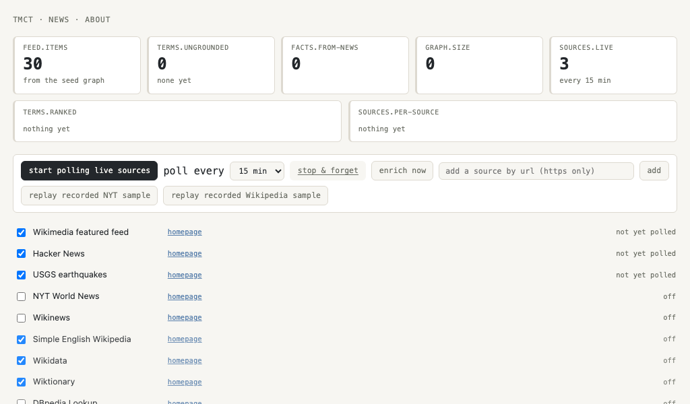

demonstration 2 of 11 · news.html
A feed that only ships what grounds
This page polls real news sources, but only on your say-so, and it only turns what comes back into facts it can point at. What it can't ground goes on a ranked list instead of into a made-up sentence.
What it demonstrates
chat.html answers a question you ask. news.html asks its own questions, on a timer, of five real feeds: a Wikimedia featured-articles feed, Hacker News, USGS earthquakes, and two more you can switch on, NYT World News and Wikinews. Nothing fetches until you click start.
The page opens on a seven-part dashboard: how many feed items it has built, how many terms it has met but can't yet ground, how many facts came from news, the graph's current size, how many sources are live, a ranked list of the ungrounded terms, and a per-source health strip.
Ground a term and its old items get reprocessed with the new fact in them. Every item still names its sources and shows a trust chip, the same tiers the ledger page uses.
Chat you can replayChat you can replay
Before you click anything, the feed already shows a few items, built only from the graph's own seed facts. Each one carries a label so it never reads as live news.
feed.items: 2 · from the seed graph — start to poll live sources
Two buttons replay a real recorded response through the exact live pipeline, with the network switched off. Nothing here is scripted output; it is the same ingest, grounding and paraphrase code a live poll runs.
click: replay recorded NYT sample a new item lands, tagged news-fixture:, tier corpus click: replay recorded Wikipedia sample a second item lands the same way
Asserted in test/adapters/news-browser-entry.test.mjs: a fixture replay lands facts tagged news-fixture: at the corpus trust tier, with zero fetches, whether or not you have ever clicked start.
Teach it something directly and it grounds on the spot. The teach panel has two ready-made examples: a short paragraph and a ten-line fact set.
teach: "A ceasefire is a formal agreement to stop fighting. A tariff is a tax on imported goods." terms.ungrounded drops by one for each term the sentence grounds
Click start and it polls for real. The button reads “start polling live sources” until you click it, then “poll now” on every visit after, because a preference remembers that you asked once.
Asserted in test/adapters/news-browser-entry.test.mjs: zero fetches happen before start(); calling it fires the first poll and writes the consent preference; a fresh session sharing the same preference store polls on load without asking again.
What it looks like
The dashboard strip, the ranked ungrounded-terms panel, and the newest three feed items on top.

What it works out
Grounded is two different questions. A term is vocab-grounded when the lexicon knows the word at all, and fact-grounded when the graph holds at least one fact about it. “Ceasefire” is a real English word the parser reads fine, and the graph might still hold nothing about it — the ranked list labels that case “parseable but knowledge-free”, and labels a word the parser can't read at all “unknown word”, so the two problems never look like one.
Ranking is an invitation, not a verdict. The ungrounded list is sorted by how often a term turned up, most first. A term at the top of the list isn't wrong or bad, it's just the biggest gap the graph has right now. Ground it and it drops off the list; the knowledge-base loop tries the top few terms itself, each poll.
A source that fails is reported as a failure. Every fetch goes through one courtesy gate: a timeout, a rate limit or a dead source all read back as a failed poll, never as a fact. Three failures in a row and the source auto-disables itself, visibly, rather than quietly going stale.
A miss can expire. A term the knowledge-base loop tried and got nothing back for sits in a negative cache for a day, so the loop doesn't keep re-asking a source that just said no. It comes back into play once the cache expires, or the moment you switch on a source that hasn't tried it yet.
What it retrieves. Each feed item is built around one hub term and everything within two hops of it in the graph, so it reads as a set of grounded sentences about one thing, with sources named underneath, never as a rewritten article.
How it is builtHow it is built
src/services/news.mjs is the one place every surface goes through: this page, chat.html's own /news command, the CLI verb, and a plain JS import all call the same functions, so no surface can drift from what the others do.
Feed parsing is string scanning over RSS, Atom and JSON Feed, plus the three sources' own JSON shapes, in src/domain/feed-normalize.mjs — no XML library, because a domain module can only import other domain modules. Every fetch runs through createCourtesyGate, the same single-slot, rate-limited, timeout-bound gate every other live source in this repo already uses.
The page is static with no backend of its own, so it can only read a source the browser itself can fetch. Every source in the registry was checked from a real browser tab hitting the live URL before it shipped; a source that only worked from curl, not a browser, was dropped from the default list rather than shipped broken.
Grounding reuses the same ingest path chat.html's own teach turn uses: strict facts from sentences the grammar fully reads, a lower-confidence optimistic tier for the rest. A bounded syllogism round runs after each batch, so a handful of new facts can chain into a few more without anyone asking a follow-up question.
Related workRelated work
The refusal this page is built around, and the wire formats it reads, both follow published work rather than an invented shape.
- Chow, “On optimum recognition error and reject tradeoff”, IEEE Transactions on Information Theory 16(1), 1970.The reject option: a classifier allowed to decline. An ungrounded term goes on the ranked list instead of into a guessed sentence.
- Reiter, “On Closed World Data Bases”, in Logic and Data Bases, Plenum, 1978, pp. 55–76.The open world assumption. A term with no fact yet is a gap in the graph, not a claim that nothing exists to know.
- Winer, “RSS 2.0 Specification”, Berkman Klein Center for Internet & Society, 2003 (revised 2009).The wire format behind the NYT World and Wikinews feeds.
- Nottingham and Sayre, eds., RFC 4287, “The Atom Syndication Format”, IETF, December 2005.The second feed format the parser reads.
- Ungerleider et al., “JSON Feed Version 1.1”, jsonfeed.org, 2020.The third; also the add-by-URL demo target, since jsonfeed.org's own feed is the one CORS-clean JSON Feed found in source research.
Credits and further reading
The sources this page can read, and what each one costs to use.
- Wikimedia featured feed, Hacker News and USGS earthquakes are on by default: no key, no cost, checked from a real browser tab before shipping.
- NYT World News is off by default. Its feed is published for personal, non-commercial use with attribution, so this page links every NYT item back to the story and names the outlet, and leaves turning it on to you.
- Wikinews is off by default too — its own front page currently announces the Wikimedia Foundation closing the site, so the health row here is what tells you if that feed goes quiet.
- Simple English Wikipedia, Wikidata and Wiktionary back the knowledge-base loop by default; DBpedia Lookup and English Wikipedia are switchable extras.
- README, “Standards and bibliography”, for the full reference list.